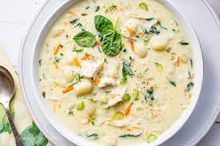
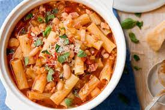

Chicken Gnocchi Soup
Chicken Gnocchi Soup is creamy at it is as creamy as our Clam Chowder recipe!
Lasanga
Lasagna is a baked casserole made with wide flat pasta and layered with fillings like vegetables and various cheeses.

Pasta
Pasta is a type of food made from a mixture of flour, eggs, and water that is formed into different shapes and then boiled.